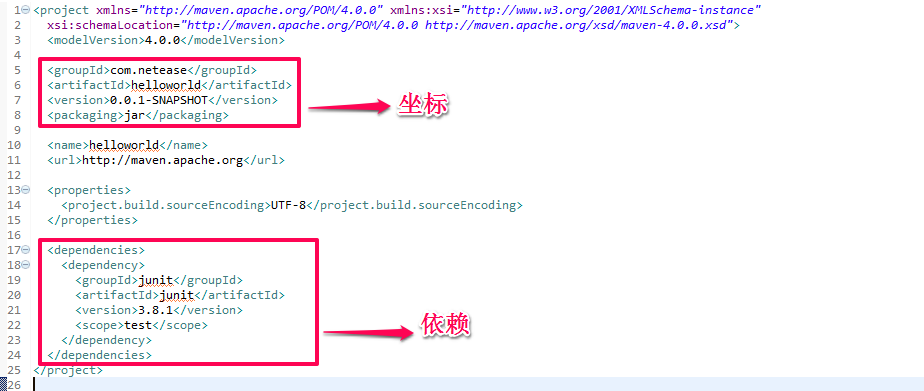
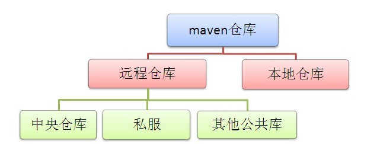
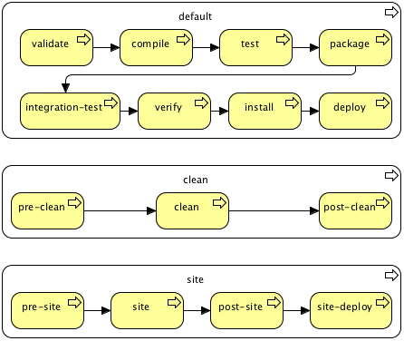
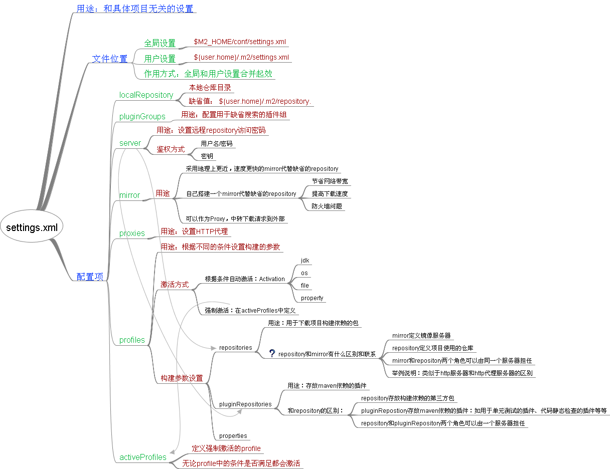
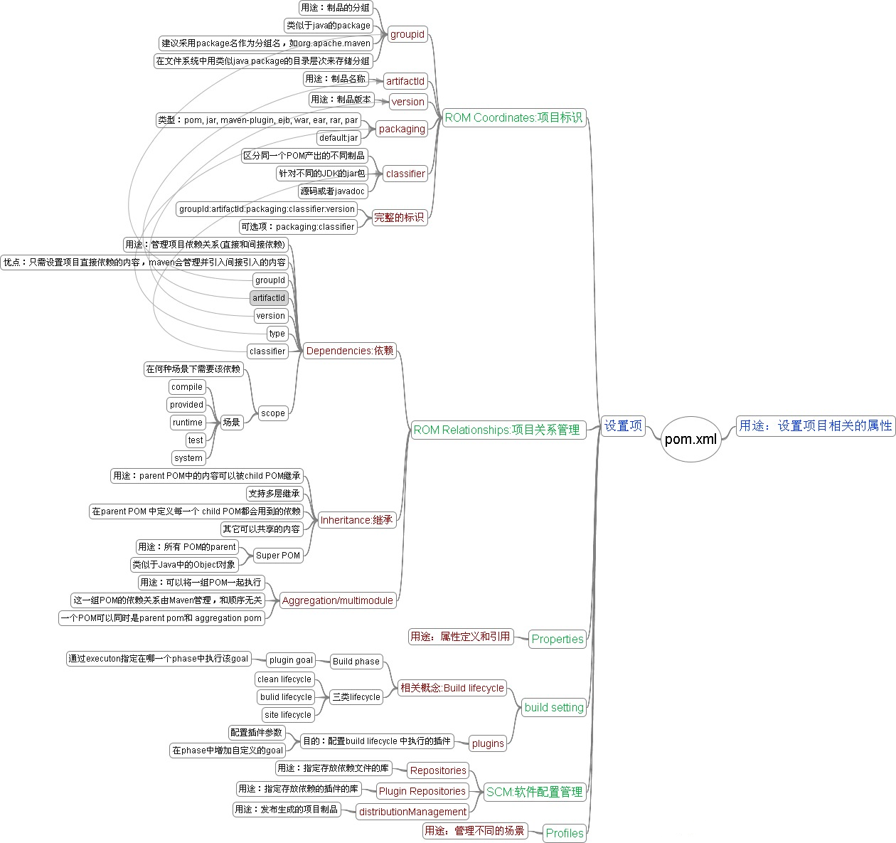
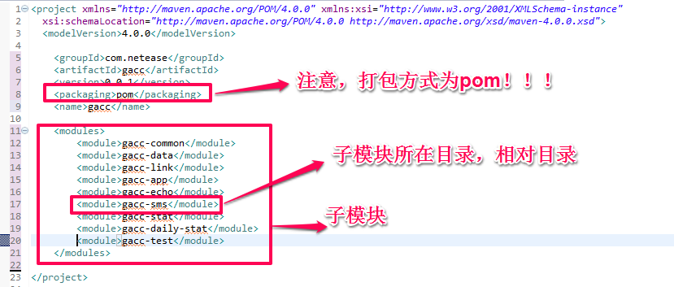
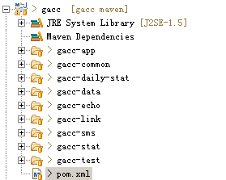
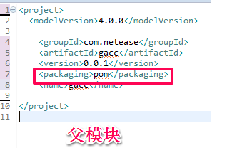
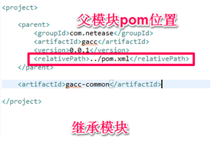

初识Maven
Maven抽象了一个完整的项目构建生命周期模型，这个模型吸取了大量优秀的构建脚本和构建工具的优点，总结了大量项目的实际需求。简单来说就是，Maven是基于约定的，遵循这些约定，可以直接使用大量成熟的Maven插件完成我们的任务。Maven能够帮我们自动化构建过程，从清理、编译、测试到生成报告、再到打包和部署。Maven还可以自动帮我们管理依赖，如python中的pipe工具。
Maven安装和配置
在官网上下载Maven，并配置系统环境变量，网上很多，此处不多叙述。
官网教程：http://maven.apache.org/download.cgi
与eclipse的集成，安装m2eclipse插件。 http://blog.rockcms.com/archives/145
我们以项目为入口，逐步认识Maven的工作。
1.1 创建项目
我们要做的第一步是建立一个 Maven 项目。在命令行中执行下面的命令来建立我们的 hello world 项目。
mvn archetype:generate -DgroupId=com.netease.helloworld -DartifactId=helloworld -Dversion=1.0-SNAPSHOT
archetype:generate 目标会列出一系列的 archetype 让你选择。 Archetype 可以理解成项目的模型。 Maven 为我们提供了很多种的项目模型，包括从简单的 Swing 到复杂的 Web 应用。其它参数我们待会解释，这时候我们看一下 maven 给我们建立的文件目录结构：

Maven 使用约定优于配置的原则 。它要求在没有定制之前，所有的项目都有如下的结构：
| 目录 | 目的 |
|---|---|
| ${basedir} | 存放 pom.xml 和所有的子目录 |
| ${basedir}/src/main/java | 项目的 java源代码 |
| ${basedir}/src/main/resources | 项目的资源，比如说 property文件 |
| ${basedir}/src/test/java | 项目的测试类，比如说 JUnit代码 |
| ${basedir}/src/test/resources | 测试使用的资源，放在此目录下 |
一个 maven 项目在默认情况下会产生 JAR 文件，另外 ，运行mvn install后的 classes 会放在 ${basedir}/target/classes 下面， JAR 文件会放在 ${basedir}/target 下面。如上图的helloworld-0.0.1-SNASHORT.jar就是生成的包。
这个基本上就是项目的默认整个框架，使用这些默认行为会让你少做很多的事情。
1.2 pom文件
Maven项目中最重要的文件，一个项目所有的配置都放置在 POM 文件中：定义项目的类型、名字，管理依赖关系，定制插件的行为。学习maven，就是要掌握pom文件的写法。pom和ant的build文件一样。 下面是helloworld项目创建时产生的简单pom文件。

这里面有两个比较重要的概念，坐标和依赖。
1.2.1 坐标
Maven的一大功能是管理项目依赖，为了能自动化的解析任何一个Java 构件，maven就必须将它们唯一标识，这就得依赖管理的底层基础—-坐标。 maven定义了这样组规则：仓库中任何一个构件都可以使用Maven坐标唯一标识，maven坐标元素包括groupId、artifactId、version、packaging、classifier。现在，只要我们提供正确的坐标元素，maven就能找到对应的组件。 maven就会从仓库中寻找相应的构件供我们使用。 在我们创建helloworld项目时，我们是不是还带了参数， 猜对了，这个参数就是坐标，用于唯一的标记一个项目
-DgroupId=com.netease.helloworld -DartifactId=helloworld -Dversion=1.0-SNAPSHOT
回归helloworld的pom文件，介绍各个元素的含义：
groupId：定义当前maven项目隶属的实际目录。groupId的表示方式与Java包名的表示方式类似，通常与域名反向一一对应。
artifactId：该元素定义实际项目中的一个Maven项目（模块），推荐的做法是使用实际项目名称作为前缀。
version：该元素定义Maven项目当前所处版本。
packaging：该元素定义Maven项目的打包方式，默认是打成jar包。
classifier：该元素用来帮助定义构建输出的一些附属构件。附属构件与主构件对应，如有一个的主构件是nexus-indexer-2.0.0.jar，该项目可能会通过使用一些插件生成如nexus-indexer-2.0.0-javadoc.jar、nexus-indexer-2.0.0-sources.jar这样一些附属构件。
上述五个元素中，groupId、artifactId、version是必须定义的，packaging是可选的（默认为jar），而classifier是通过相应的插件生成的。
1.2.2 仓库
了解依赖之前，先来了解一下Maven的仓库概念。 仓库主要用于获取工程依赖的其他工程的生成构件，也可用来部署（deploy）Maven工程的生成构件。 仓库存放的是包括各种生成的包以及pom文件。 如果有必要，一个工程可以部署到多个仓库。 仓库可以分为本地库（local）和远程库（remote）。本地库通常位于本机~/.m2/repository文件夹， 远程库最常见的是maven中央库（http://repository.jboss.com/maven2/），此外也会有一些自己搭建私服库，比如nexus库用于企业内部。

在运行Maven的时，Maven所需要的依赖构件都是直接从本地仓库获取的，如果本地仓库有依赖构建，直接使用；如果本地仓库没有，它会首先尝试从远程仓库下载构件至本地仓库，然后再使用本地仓库的构件。
1.2.3 依赖
一个复杂的项目将会包含很多依赖，也有可能包含依赖于其它构件的依赖。这是Maven最强大的特征之一，它支持了传递性依赖（transitive dependencies）。假如你的项目依赖于一个库，而这个库又依赖于五个或者十个其它的库（就像Spring或者Hibernate那样）。你不必找出所有这些依赖然后把它们写在你的pom.xml里，你只需要加上你直接依赖的那些库，Maven会隐式的把这些库间接依赖的库也加入到你的项目中。Maven也会处理这些依赖中的冲突，同时能让你自定义默认行为，或者排除一些特定的传递性依赖。 回到helloword的例子，pom文件配置了以下的依赖
<dependencies>
<dependency>
<groupId>junit</groupId>
<artifactId>junit</artifactId>
<version>3.8.1</version>
<scope>test</scope>
</dependency>
</dependencies>
通过配置这样依赖Maven在构建过程中就能根据坐标groupId=junit;artifactId=junit;version=3.8.1;在本地仓库或者远程仓库中找到这个依赖。 我们还看到了scope标签，我们来看有哪些值 scope依赖的范围有：
compile compile是默认的范围；如果没有提供一个范围，那该依赖的范围就是编译范围。编译范围依赖在所有的classpath 中可用，同时它们也会被打包。
provided provided 依赖只有在当JDK 或者一个容器已提供该依赖之后才使用。例如， 如果你开发了一个web 应用，你可能在编译 classpath 中需要可用的Servlet API 来编译一个servlet，但是你不会想要在打包好的WAR 中包含这个Servlet API；这个Servlet API JAR 由你的应用服务器或者servlet 容器提供。已提供范围的依赖在编译classpath （不是运行时）可用。它们不是传递性的，也不会被打包。
runtime runtime 依赖在运行和测试系统的时候需要，但在编译的时候不需要。比如，你可能在编译的时候只需要JDBC API JAR，而只有在运行的时候才需要JDBC驱动实现。
test 仅仅为test的用的，你肯定一下子就能想到junit。test范围依赖在一般的编译和运行时都不需要，它们只有在测试编译和测试运行阶段可用。
system 如果你有一些包你自己的系统里有，你不想让maven从repository里面下载，你可以用这个选项。 你必须显式的提供一个对于本地系统中JAR 文件的路径
<dependency> <groupId>com.google.code.gson</groupId> <artifactId>gson</artifactId> <version>2.3</version> <scope>system</scope> <systemPath>E:/lib/gson.jar</systemPath> </dependency>
scope默认配置是compile。
Maven在遇到依赖传递，依赖冲突，依赖重复时有一套解决方案，详情请看 http://maven.apache.org/guides/introduction/introduction-to-dependency-mechanism.html
到这一步，其实已经可以顺利使用maven来构建项目了，只要你遵守了maven的默认约定，你所需要做的就是把项目中依赖的包，都按格式写在
2 Maven生命周期和插件
经过第一章，虽然可以构建项目，但是大家肯定觉的迷糊，Maven如何工作，如果项目不按照默认约定，想加入更多的功能，应该如何配置pom。 这章来解答这个问题。
2.1 Maven生命周期
maven将工程（Project）的构建过程理解为不同的生命周期(LifeCycle)和阶段（Phase）。 生命周期互相独立，之间也没有一定的顺序关系。 每个生命周期又划分为不同的阶段（Phase）。阶段之间有明确的顺序关系， 同一生命周期内的阶段必须按顺序依次执行。 maven内置了三个生命周期， 分别是clean、default和site。clean生命周期主要是做项目清理的，default生命周期是用来项目构建的；site生命周期是用来建立项目的文档和站点生成 。
maven生命周期和生命阶段如下图所示：

clean、default和site生命周期互相独立，之间也没有一定的顺序关系。生命周期中阶段之间有明确的先后依赖顺序关系， 同一生命周期内的阶段必须按顺序依次执行。 从命令行执行Maven任务的主要方式是调用Maven的生命周期阶段。比如说在命令行执行了
- mvn clean 就是指定执行到clean周期的clean阶段。也就是说实际执行了pre-clean阶段与clean两个阶段。
- mvn install 就是执行了default生命周期中，validate->install之间的阶段。
- mvn clean deploy site-deploy 这个就是执行了clean周期的前两个阶段、default周期的所有阶段、site周期的所有阶段
更详细的phase说明参考： http://maven.apache.org/guides/introduction/introduction-to-the-lifecycle.html#Lifecycle_Reference
2.2 Maven插件
项目生命周期是一个抽象的概念，这个概念性的东西意味着它并不做任何实质性的事情，也就是说：它就像接口，只定义规范，具体细节它不管。也就是说，Maven不知道怎么样编译或者怎么样打包。那谁来执行项目生命周期的各个阶段呢，答案是插件。Maven功能具体的实现细节则交给了Maven的各个丰富的插件。所以 Maven 核心的分发包只有不到 3MB，Maven 会在需要的时候下载并使用插件。Maven 通过插件动作完成大多数构建任务。可以把 Maven 引擎认为是插件动作的协调器。
2.2.1 插件目标
Maven的功能依赖于各种插件， 对于插件本身，为了能够复用代码，其实可以干好几件事情，每件事情又有个名字叫做目标。一个目标就是实现maven一个功能。一个插件就是一组插件目标的集合。
所以其实运行Maven任务就是运行插件的目标。
2.2.2生命周期与插件的绑定
插件的目标goal不一定都与生命周期绑定，但Maven的生命周期是与插件goal绑定的，不然谁来帮Maven干活，这里也不是说每个生命周期的阶段都需要绑定插件目标，而是在某个阶段如果要实现功能任务，则必须与插件目标绑定。
(1)内置绑定
为了让用户不用任何配置就能进行一般程度的项目构建，Maven默认给自己生命周期的核心阶段绑定了默认的插件。例如Maven默认将maven-compiler-plugin的compile目标与compile生命周期阶段绑定，因此命令mvn compile实际上是先定位到compile这一生命周期阶段，然后再根据绑定关系调用maven-compiler-plugin的compile目标。 插件目标（goal）可以附着在生命周期阶段上，Maven在运行每个phase时，maven会看环境（即pom.xml）中配置了哪些插件，然后会运行它，完成构建任务！
各个生命周期默认的内置绑定如下：
- clean 生命周期阶段与插件目标的绑定关系
| 生命周期阶段 | 插件目标 |
|---|---|
| pre-clean | |
| clean | maven-clean-plugin:clean |
| post-clean |
- site 生命周期阶段与插件目标的绑定关系
| 生命周期阶段 | 插件目标 |
|---|---|
| pre-site | |
| site | maven-site-plugin:site |
| post-site | |
| site-deploy | maven-site-plugin:deploy |
- default 生命周期阶段与插件目标的绑定关系 由于项目的打包类型会影响构建的具体过程，因此，default生命周期阶段与插件目标的绑定关系，由项目打包类型决定。例如：最常见的jar类型生命周期的内置插件绑定关系
| 生命周期阶段 | 插件目标 |
|---|---|
| process-resources | maven-resources-plugin:resources |
| compile | maven-compiler-plugin:compile |
| process-test-resources | maven-resources-plugin:testResources |
| test-compile | maven-compiler-plugin:testCompile |
| test | maven-surefire-plugin:test |
| package | maven-jar-plugin:jar |
| install | maven-install-plugin:install |
| deploy | maven-deploy-plugin:deploy |
有了这些内置的绑定，还记得我们的helloworld项目吧，pom文件里面不需要配置任何的插件，运行mvn install就能打包，其实都是调用了绑定的插件目标。
（2）用户自定义绑定
有些插件目标默认绑定到生命周期上某个阶段的，pom文件只要配置了插件目标，在对应的阶段就能运行。有些插件是需要用户自己绑定到某个阶段的。
<plugin>
<groupId>org.apache.maven.plugins</groupId>
<artifactId>maven-source-plugin</artifactId>
<version>2.1.1</version>
<executions>
<execution>
<id>attach-sources</id>
<phase>verify</phase>
<goals>
<goal>jar-no-fork</goal>
</goals>
</execution>
</executions>
</plugin>
在POM的build元素下plugins子元素中声明插件的使用，该例子使用的是maven-source-plugin插件。上面的executions下每个execution子元素可以配置一个任务。该例子配置了一个id为attach-sources的任务，通过phase配置，将其绑定到verify生命周期的阶段上，再通过goals配置指定要执行的插件目标。
2.2.3插件运行方式
第一种方式是将插件目标与生命周期阶段（lifecycle phase）绑定，这样用户在命令行只是输入生命周期阶段，就可以运行该插件的功能。
第二种方式是直接在命令行指定要执行的插件目标，本文一开始时创建项目，就是直接调用了插件的目标，跟maven生命周期无关。mvn archetype:generate 就表示调用maven-archetype-plugin的generate目标，这种带冒号的调用方式与生命周期无关。
2.2.4插件调用命令通用写法
正常在mvn调用插件目标的写法应该是
mvn groupId:artifactId:version:goal –D….
-D后面可以配置插件的参数。
有了目标前缀也就是插件前缀goal prefix后就可以简写为
mvn prefix:goal –D…
冒号前面是插件前缀，冒号后面是该插件的目标。例如：dependency:list、compiler:compile。
如何由插件前缀找到插件，可以看 http://maven.apache.org/guides/introduction/introduction-to-plugin-prefix-mapping.html
2.2.5插件的帮助信息
可以使用maven-help-plugin查看插件的详细信息，比如：
mvn help:describe-Dplugin=org.apache.maven.plugins:maven-source-plugin:2.11 -Ddetail
了解完这一章，你已经可以运用插件来定制你所要的功能，在pom中添加下面的配置：
<build>
<plugins>
<plugin>
....
</plugin>
<plugin>
....
</plugin>
</plugins>
<build>
要定制相关的功能，你需要了解一些常用的插件。
3 maven配置文件
3.1 setting.xml文件
settings.xml对于maven来说相当于全局性的配置，用于所有的项目。 在下面路径中可以找到这个文件，分别为：
- $M2_HOME/conf/settings.xml：全局设置，在maven的安装目录下；
- ${user.home}/.m2/settings.xml：用户设置，需要用户手动添加，可以将安装目录下的settings.xml文件拷贝过来修改。
两个文件的关系为：如果两个文件同时存在，文件内容将被融合，相同设置将以用户设置的settings.xml为准。下图是setting.xml 内容的解释图。

3.2 pom.xml文件
快速查看pom的主要内容，主要包含基本信息、构建信息、项目附加信息、部署发布环境信息。
<project>
<modelVersion>4.0.0</modelVersion>
<!-- 基本信息 -->
<groupId>...</groupId>
<artifactId>...</artifactId>
<version>...</version>
<packaging>...</packaging>
<dependencies>...</dependencies>
<parent>...</parent>
<dependencyManagement>...</dependencyManagement>
<modules>...</modules>
<properties>...</properties>
<!-- 构建信息-->
<build>...</build>
<reporting>...</reporting>
<!-- 项目的附加信息-->
<name>...</name>
<description>...</description>
<url>...</url>
<inceptionYear>...</inceptionYear>
<licenses>...</licenses>
<organization>...</organization>
<developers>...</developers>
<contributors>...</contributors>
<!-- 部署发布环境设置-->
<issueManagement>...</issueManagement>
<ciManagement>...</ciManagement>
<mailingLists>...</mailingLists>
<scm>...</scm>
<prerequisites>...</prerequisites>
<repositories>...</repositories>
<pluginRepositories>...</pluginRepositories>
<distributionManagement>...</distributionManagement>
<profiles>...</profiles>
</project>

4 POM聚合与继承
4.1 合成
合成是指一个项目中可能有多个模块，这时候就需要有一个模块将模块集中起来统一管理，这个模块就是聚合模块，这个模块也是一个Maven工程，只是不需要源码，只要pom配置文件就行。
实现的方法是，同样创建一个Maven项目，用来聚合，该项目下只有pom.xml，配置项是modules，其他文件都不需要。 配置pom.xml和对应的目录结构为下图，我的项目的子模块都放在gacc这个聚合模块的目录下方。
 
聚合模块的打包方式为pom，在
4.2 继承
在项目中pom的配置，往往有很多是相同的，也许是有相同的groupId和version，或者相同的依赖和插件，这些公共的东西都可以提取出来，新项目只需继承这个，就可以消除一些不必要的重复。事实上，pom文件都继承了一个super pom。这也解释了开始时我们推荐使用Maven的默认架构的原因，super pom帮我配置了必要的东西。
super pom的配置 http://books.sonatype.com/mvnref-book/reference/pom-relationships-sect-pom.html#pom-relationships-sect-super-pom
实现方法
同样，我们需要新建一个parent的Maven的项目，项目里面只有一个pom的文件供其他模块继承。下图是parent项目的配置和相关子项目的引用。
 
能够被继承的元素有
groupId ：项目组 ID ，项目坐标的核心元素；
version ：项目版本，项目坐标的核心元素；
description ：项目的描述信息；
organization ：项目的组织信息；
inceptionYear ：项目的创始年份；
url ：项目的 url 地址
develoers ：项目的开发者信息；
contributors ：项目的贡献者信息；
distributionManagerment ：项目的部署信息；
issueManagement ：缺陷跟踪系统信息；
ciManagement ：项目的持续继承信息；
scm ：项目的版本控制信息；
mailingListserv ：项目的邮件列表信息；
properties ：自定义的 Maven 属性；
dependencies ：项目的依赖配置；
dependencyManagement ：醒目的依赖管理配置；
repositories ：项目的仓库配置；
build ：包括项目的源码目录配置、输出目录配置、插件配置、插件管理配置等；
reporting ：包括项目的报告输出目录配置、报告插件配置等。
在项目中聚合模块和父模块可以是同一个，使用同一个pom文件。 我的项目中聚合模块和父模块是同一个，只用一个pom.xml 文件就达到了聚合和继承的目的。
下面的部分是一些常用的配置。
配置其实就是运用maven的插件，通过配置相关的参数来达到我们的需求，这得需要我们了解一些常用的插件，了解 插件的功能。maven提供了相当丰富的插件，完全不用我们自己开发就能达到我们项目的大部分需求。
Maven打包
这里只介绍打成jar包。 打包有二种形式：
- 把所有依赖包打进同一个jar。 这种方式也有两种情况
1、把依赖的jar，unpack后打进同一个jar，打出来的jar里面是class都是混在一起的，可以用插件maven-shade-plugin，或者maven-assembly-plugin。
<plugin>
<groupId>org.apache.maven.plugins</groupId>
<artifactId>maven-shade-plugin</artifactId>
<version>2.3</version>
<executions>
<execution>
<phase>package</phase>
<goals>
<goal>shade</goal>
</goals>
<configuration>
<transformers>
<transformer implementation="org.apache.maven.plugins.shade.resource.ManifestResourceTransformer">
<manifestEntries>
<Main-Class>com.netease.gacc.app2.AppServerMain</Main-Class>
</manifestEntries>
</transformer>
</transformers>
</configuration>
</execution>
</executions>
</plugin>
2、用第三方库onejar-maven-plugin，这个插件完成的功能是把所有依赖包打入一个jar里面，jar里面还是分离的jar，但是会引入一个新的class类。
<plugin>
<groupId>org.dstovall</groupId>
<artifactId>onejar-maven-plugin</artifactId>
<version>1.4.4</version>
<executions>
<execution>
<configuration>
<mainClass>com.netease.gacc.app2.AppServerMain</mainClass>
<!-- Optional -->
<onejarVersion>0.97</onejarVersion>
<!-- Optional, use only if you need to include native libraries (dll's) -->
<!-- Optional, default is false -->
<attachToBuild>true</attachToBuild>
<!-- Optional, default is "onejar" -->
<classifier>onejar</classifier>
</configuration>
<goals>
<goal>one-jar</goal>
</goals>
</execution>
</executions>
</plugin>
<pluginRepositories>
<pluginRepository>
<id>onejar-maven-plugin.googlecode.com</id>
<url>http://onejar-maven-plugin.googlecode.com/svn/mavenrepo</url>
</pluginRepository>
</pluginRepositories>
onejar-maven-plugin这个插件不是maven标准库里面，所以配置了该插件所在的地址。
- 把依赖的jar导出到一个外部的目录，在打包的MANIFEST.MF里面加入class-path；
1、 MANIFEST.MF里面加入class-path的配置
<plugin>
<groupId>org.apache.maven.plugins</groupId>
<artifactId>maven-jar-plugin</artifactId>
<configuration>
<archive>
<manifest>
<addClasspath>true</addClasspath>
<classpathPrefix>../lib</classpathPrefix>
<mainClass>com.netease.gacc.link2.LinkServerMain</mainClass>
</manifest>
<manifestEntries>
<Class-Path>./</Class-Path>
</manifestEntries>
</archive>
</configuration>
</plugin>
2、将依赖jar导出到一个目录的配置
<plugin>
<groupId>org.apache.maven.plugins</groupId>
<artifactId>maven-dependency-plugin</artifactId>
<executions>
<execution>
<id>copy</id>
<phase>install</phase>
<goals>
<goal>copy-dependencies</goal>
</goals>
<configuration>
<outputDirectory>
../lib
</outputDirectory>
</configuration>
</execution>
</executions>
</plugin>
Maven仓库
（1）配置本地仓库 在setting.xml里面配置local，
<settings>
<localRepository>D:\java\repository</localRepository>
</settings>
（2）配置远程仓库，比如私服nexus 比如我在本地里搭了一个nexus的服务器
<repositories>
<repository>
<id>nexus-releases</id>
<url>http://127.0.0.1:8081/nexus/content/repositories/gacc-releases/</url>
<releases>
<enabled>true</enabled>
</releases>
<snapshots>
<enabled>true</enabled>
</snapshots>
</repository>
</repositories>
Nexus仓库需要进行用户名和密码的验证，需要在setting里面设置对应的服务器
<server>
<id>nexus-releases</id>
<username>admin</username>
<password>admin123</password>
</server>
<server>
<id>nexus-snapshots</id>
<username>admin</username>
<password>admin123</password>
</server>
server里面的id指明对应的服务器，同repository里面的id相对应。 username、 password表示对应用户名和密码。
Maven的jar的发布
打包生成的jar需要发布到远程服务端，供其他人下载和访问。在pom中配置distributionManagement项，配置发布的地址。 有很多种发布方式，这里介绍两类
用scp部署到内网服务器
首先设置setting.xml里面服务器相关信息，用户名和私钥的信息
<server>
<id>ssh-repository</id>
<username>gzchenfei</username>
<privateKey>C:\Users\game-netease\.ssh\id_rsa</privateKey> <!-- not needed if using pageant -->
<passphrase>xxx</passphrase>
</server>
在pom.xml中配置distributionManagement，extensions是插件的拓展功能，repository里的url配置为远程机器的目录，scp指明传输方式，配置如下：
<distributionManagement>
<repository>
<id>ssh-repository</id>
<name>gacc</name>
<url>scp://123.58.183.140:32200/home/gzchenfei/temp/gacc</url>
</repository>
</distributionManagement>
<build>
<extensions>
<extension>
<groupId>org.apache.maven.wagon</groupId>
<artifactId>wagon-ssh</artifactId>
<version>2.4</version>
</extension>
</extensions>
</build>
部署到远程nexus仓库
需要先建立一个nexus的仓库，然后进行下面的配置：
<distributionManagement>
<repository>
<id>nexus-releases</id>
<name>Nexus Release Repository</name>
<url>http://127.0.0.1:8081/nexus/content/repositories/gacc-releases/</url>
</repository>
<snapshotRepository>
<id>nexus-snapshots</id>
<name>Nexus Snapshot Repository</name>
<url>http://127.0.0.1:8081/nexus/content/repositories/gacc-snapshots/</url>
</snapshotRepository>
</distributionManagement>
其中setting.xml需要设置nexus的用户名和密码
<server>
<id>nexus-releases</id>
<username>admin</username>
<password>admin123</password>
</server>
<server>
<id>nexus-snapshots</id>
<username>admin</username>
<password>admin123</password>
</server>
项目站点和报告
Maven可被用来创建一个项目web站点，以收集所有与最终用户和开发者相关的信息。mvn site功能强大，特别是在生成的项目站点中可以添加很多测试报告及文档。 如果不做任何配置，执行mvn site命令生成默认样式的站点，主要包括以下内容：
1、子模块列表Modules；
2、文档列表Project Documentation，主要有两大块：项目信息Project Information 、项目报告Project Reports；
3、项目信息Project Information，默认包括项目相关概要信息、持续集成、依赖、插件、配置库等报告，详见官网（Apache > Maven > Plugins > Maven Project Info Reports Plugin）：
http://maven.apache.org/plugins/maven-project-info-reports-plugin/
4、项目报告Project Reports，取决与pom.xml文件中
在项目目录下，运行mvn site在target下会生成

要在浏览器中预览结果，你可以运行mvn site:run，Maven会构建站点并启动一个内嵌的Jetty容器。一旦Jetty启动并开始监听8080端口（默认情况下），你就可以通过在浏览器中输入http://localhost:8080/查看项目站点了。如下图所示：

结束
本文对maven的介绍就到这里，希望对大家学习使用maven入门有所帮助，只有在实践中才会遇到问题，通过解决问题加深对maven的了解。期望和大家一起学习提高。